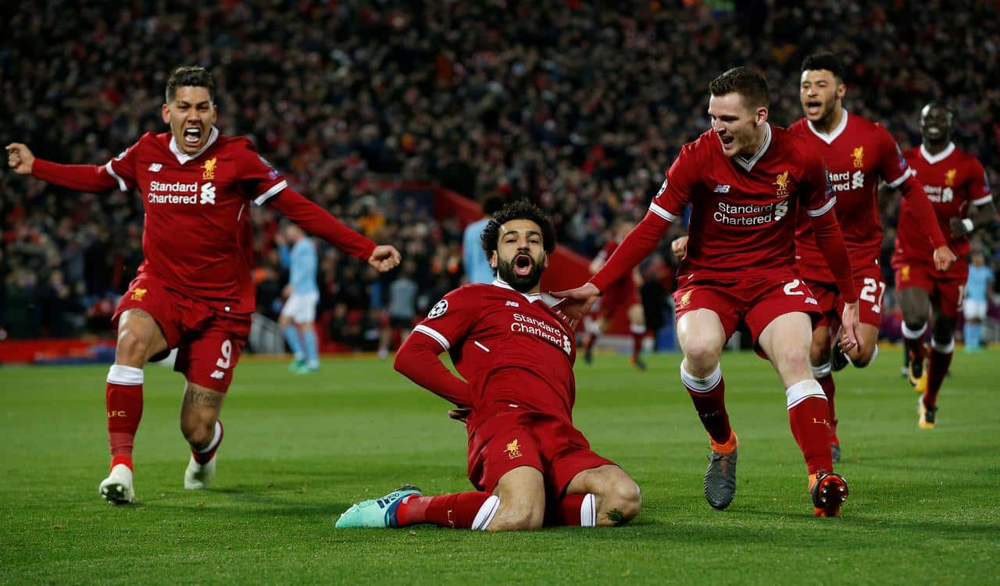
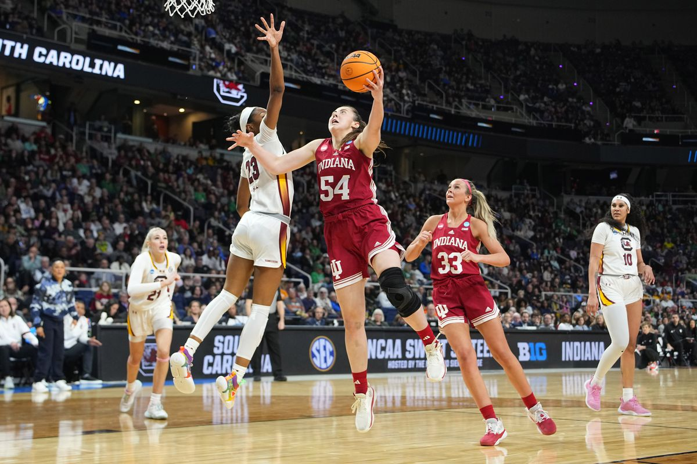
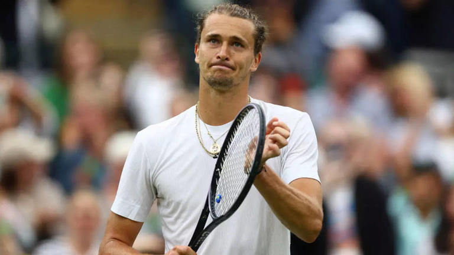

Exciting Football Match

A blogging site dedicated to football, run by alumni from JNU, IIM and IIT won the award for the Best Established Football Blog (Fans’ Choice) at the Football Blogging Awards (FBA) in Manchester last week. Goalden Times (GT), a not-for-profit blogging site is the first Indian site to receive such an award.
GT whose motto is “Ludo Ergo Sum (I Play therefore I am) is a “labour of love” of people who met on social media – first Orkut and then Facebook – and after years of interacting in the virtual word about the beautiful game, decided to take it a step forward through a site that would give enthusiasts platform to give an alternate perspective of the game.
Read more
Basketball Championship

Holmes said that she will remain in the 2024 WNBA draft and hopes to be ready to play again by Training Camp in 2025.
Holmes missed time at Indiana due to injury and credits the training staff for the multiple rehab stints she did during her time as a Hoosier. According to the post though, this is an injury that’s lingered since high school and will require surgery to fully heal.
In case Indiana fans needed another reason to appreciate Holmes, this just goes to show that she wasn’t even fully healthy for her whole time at Indiana. Putting this surgery off until after college was also a huge sacrifice, as WNBA roster spots are exceedingly hard to come by.
Hopefully the surgery goes well and we see a new and improved version of Mack in 2025, something we’ve never seen before. The idea that she could get even better is exactly why a WNBA team needs to take her..
Read more
Tennis Grand Slam

Alexander Zverev, the fourth seed, comfortably advanced to the second round of Wimbledon on Tuesday with a 6-2, 6-4, 6-2 win over Roberto Carballes Baena, taking a step closer to his goal of securing his first Grand Slam title.
Despite Carballes Baena's determined effort, the Spaniard, ranked 60 spots below Zverev, struggled to counter the German's forceful serve and potent forehand, reported Reuters.
Read more
Comments